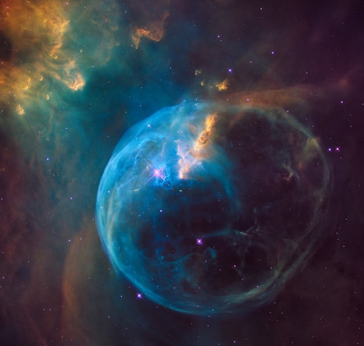

2025年12月
最新
韦伯望远镜发现早期星系
詹姆斯·韦伯太空望远镜在宇宙早期发现了出乎意料的大质量星系，挑战了现有的星系形成理论。
詹姆斯·韦伯太空望远镜在宇宙早期发现了出乎意料的大质量星系，挑战了现有的星系形成理论。

科学研究团队在火星南极冰盖下方发现大型液态水湖，为寻找地外生命提供了新线索。

FAST射电望远镜在银河系中发现多颗新的毫秒脉冲星，对引力波研究具有重要意义。
星舰组合体即将进行第五次轨道飞行测试，首次尝试"筷子"式捕获回收超级重型助推器。

中国新一代运载火箭长征十二号在海南商业航天发射场成功首飞，将多颗卫星送入轨道。

NASA阿尔忒弥斯登月计划持续推进，目标在本年代末实现宇航员再次登陆月球。
天文学家在距地球约40光年的恒星系统中发现一颗位于宜居带的超级地球，可能拥有液态水。

国际团队利用引力透镜效应绘制出目前最精确的宇宙暗物质三维分布图。

天文学家宣布新发现12颗木星卫星，使木星已知卫星总数达到95颗，居太阳系之首。
2026年1月1日 — 新征程的起点
目标：2026年1月1日 00:00 (北京时间)